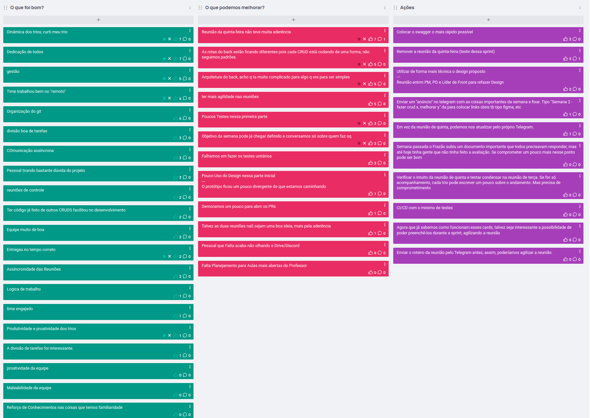

Sprint 1
Issues e responsáveis
| Atividade |
Responsável(is) |
| Criar e listar professor |
Matheus Soares Arruda, Mateus Caltabiano Neves Frauzino, João Victor Correia de Oliveira |
| Criar e listar alunos |
Victor Eduardo Araújo Ribeiro, Pedro de Miranda Haick, Vitor Manoel Aquino de Brito |
| Integração com SonarQube |
Gabriel Ferreira da Silva, Pedro Helias Carlos, Caio Vitor Carneiro de Oliveira |
| Integração com o Auth0 |
Guilherme Keyti Cabral Kishimoto, Matheus Calixto Vaz Pinheiro, Felipe Alef Pereira Rodrigues |
| Tela de preenchimento de matricula de aluno |
Hugo Rocha de Moura, Henrique Pucci da Silva Pinto |
| CRUD de escolas |
Lucas Lopes Frazão |
Reuniões de acompanhamento
Dia 12/11/2024
| Atividade |
O que foi feito |
O que falta fazer |
| Criar e listar professor |
Desenvolvimento concluído no backend |
Desenvolvimento do frontend |
| Criar e listar alunos |
Backend já está funcional com todas as rotas CRUD. Frontend está em estado inicial |
Finalizar o frontend |
| Integração com SonarQube |
Estudo e configuração do Sonarqube a nível local no backend e frontend, para coleta de testes, verificação de segurança e cobertura de código |
Explicação de como rodar o Sonar Scanner |
| Integração com o Auth0 |
Login e logout com o auth0 estão configurados e redirecionando corretamente |
Tela de login e bug de logout |
| Tela de preenchimento de matricula de aluno |
Iriam iniciar a issue |
- |
| CRUD de escolas |
Foi finalizado o fluxo completo |
Testes |
Dia 14/11/2024
| Atividade |
O que foi feito |
O que falta fazer |
| Criar e listar professor |
Finalização do frontend |
Correção do PR e merge |
| Criar e listar alunos |
Evolução do frontend e ajustes de captura de erro no backend |
Teste do backend, e finalização do frontend (editar e excluir) |
| Integração com SonarQube |
SonarQube está integrado no backend e frontend. SonarScanner está rodando por fora, é necessário rodar ele no docker-compose para evitar a instalação local |
SonarScanner no docker e documentação de como rodar o SonarQube + SonarScanner e a esteira de CI/CD. |
| Integração com o Auth0 |
O fluxo de login está funcionando. A proteção dos endpoints no backend já está implementada, mas por enquanto só em um endpoint de teste. A requisição para pegar o token no Postman com a API do Auth0 também já está configurada. |
Implementar no front a requisição na API do Auth0 para pegar o token depois de logado;. A tela com o botão de login antes de acessar o site. |
| Tela de preenchimento de matricula de aluno |
Finalizado |
Correção do PR e merge |
| CRUD de escolas |
Testes realizados |
- |
Avaliação de pares
Criar e listar professor
| Menção e pequeno relato |
Matheus Soares Arruda |
Mateus Caltabiano Neves Frauzino |
João Victor Correia de Oliveira |
| Matheus Soares Arruda |
SS -> Acredito que dei o meu melhor e ajudei onde podia, projetei tudo que me foi pedido. Desenvolvi mais no back do que no front e fiquei responsável pela comunicação do meu squad. Tive um certo envolvimento também na questão do Docker do projeto. |
SS -> Ótimo companheiro de equipe, comunicativo e auxiliador, atuou bem em pair programming no back-end e resolveu issues no front |
SS -> Ótimo companheiro de equipe, responsável e organizado, ajudou tanto no back quanto no front, com maior foco no front onde teve destaque por concluir boa parte da issue. |
| Mateus Caltabiano Neves Frauzino |
SS -> Sempre disponível e proativo, boa liderança na sprint e com muito conhecimento geral, mais ainda na parte do back-end. |
SS -> A sprint acabou calhando com uma grande entrega no meu trabalho, mas, mesmo com falta de tempo, acredito que ainda consegui participar bem da sprint. |
SS -> Também sempre disponível e proativo, chegando a puxar tarefas tarde da noite, resolvendo e atualizando o resto para a continuação do trabalho. |
| João Victor Correia de Oliveira |
SS -> Ele tem um conhecimento muito grande de como as coisas funcionam e a base delas, uma ótima pessoa para trabalhar junto sempre sendo muito solícito |
SS -> Muito consistente no front e é o que possui mais conhecimento de next/prisma do grupo, auxiliou muito principalmente no bug do datepicker |
SS -> Acredito que dei o meu melhor dentro de uma rotina corrida com tcc, estágio e outras matérias. Fiz o que foi solicitado e atuei junto ao trio |
Criar e listar alunos
| Menção e pequeno relato |
Victor Eduardo Araújo Ribeiro |
Pedro de Miranda Haick |
Vitor Manoel Aquino de Brito |
| Victor Eduardo Araújo Ribeiro |
SS -> Acredito que participei bastante, tentando acompanhar o status das atividades e me disponibilizando caso alguém precisasse de ajuda, e também criando a estrutura do CRUD de alunos, buscando entender e aprender sobre nest.js/prisma (duas tecnologias que não tinha tido contato até então). |
SS -> O Pedro trabalhou no backend comigo, eu fiz a estrutura do CRUD e o pedro responsável pelos testes e pelas mensagens de retorno/tratamento de exceções, e conseguiu desempenhar sua função muito bem. |
SS -> Combinamos no trio que o Vitor ficaria responsável pelo frontend mas que se precisasse de ajuda eu o ajudaria mas acabou que não precisou e mesmo relatado que não possuía muito conhecimento de React conseguiu desempenhar sua função. |
| Pedro de Miranda Haick |
SS -> Trabalhou comigo no backend, fez a estrutura do CRUD e eu complementei com o tratamento de erros e testes. |
SS -> Consegui completar minha tarefa dentro do tempo determinado e dar uma pequena organizada no código. |
SS -> Ficou responsável pelo frontend e desempenhou as atividades sem problemas, não precisando de ajuda dos outros membros do trio. |
| Vitor Manoel Aquino de Brito |
SS -> O Victor ficou responsável por desenvolver a parte do backend em conjunto com o Pedro, e conseguiu entregar o que foi combinado de forma bem rápida e com excelência, mesmo relatando que ainda não tinha grande familiaridade com o NestJs. Além disso, mostrou-se sempre disposto a ajudar com o que fosse necessário. |
SS -> O Pedro ficou responsável por evoluir o backend e otimizar as tratativas de erro e realizar os testes, e conseguiu realizá-los dentro do tempo hábil e com qualidade. |
SS -> Fiquei responsável por desenvolver as telas necessárias para o Gerenciamento dos Estudantes, e apesar das dificuldades por conta da falta de familiaridade com as tecnologias utilizadas para o projeto, consegui entregar o que foi combinado e aprimorar meu conhecimento para as próximas entregas. |
| Menção e pequeno relato |
Gabriel Ferreira da Silva |
Pedro Helias Carlos |
Caio Vitor Carneiro de Oliveira |
| Gabriel Ferreira da Silva |
SS -> Acredito que participei bastante, dando minha opinião e implementando o caminho do sonar + sonarscanner no windows, acredito também que nessa primeira sprint acabamos por fechar ela, já que definimos que a mesma seria de escopo local nessa parte, e definimos qual seria esse limite. |
SS -> O Pedro foi essencial para a construção do sonar, mostrou domínio e conhecimento sobre ações de CI/CD, sendo esse um dos motivos pelos quais escolhemos ele como líder dessa posição. O mesmo traçou um planejamento sobre como poderíamos fazer essa integração com Github e nessa primeira parte foi essencial para o foco de todo o ambiente sonar no docker e linux. |
SS -> O Caio não pode participar o quanto queria por motivos pessoais, mostrando e avisando sua justificativa para ausência. Mas também mostrou que possui um pouco de conhecimento sobre. |
| Pedro Helias Carlos |
SS -> Excelente participação, presente na reunião que marcamos e trabalhou bastante. Atuou na resolução do Sonarqube do ponto de vista do Windows e correções no dockerfile + instalação do Sonarscanner, enquanto fiz o mesmo processo no Linux. |
SS -> Primeira issue do time, considero concluída. Atuei nos testes e confirmação do processo de execução do sonarqube no backend com Linux, e posteriormente a isso fiz a configuração no frontend. Juntamente a isso, comecei o CI do frontend, contando com instalação das dependências, build do projeto e linter. A ser evoluido nas proximas issues. |
SS -> O Caio teve problemas pessoais para resolver, então tem justificativa para ausência e se mostrou bastante participativo quando solicitado. |
| Caio Vitor Carneiro de Oliveira |
SS -> O Gabriel se mostrou excelente na resolução de problemas relacionados a CI/CD resolvendo problemas no DockerFIle e integração com o Sonarscanner. |
SS -> O Pedro se mostrou um ter domínio e disponibilidade para ajudar nas atividades da Equipe, sendo um excelente líder em CI/CD. Além de que o Pedro se mostrou um excelente colaborador atualizando o time sobre a entrega. |
MS -> Por problemas pessoais não consegui atuar de fato na entrega da sprint, mas consegui colaborar na comunicação/organização do time e entendimento da implementação. |
| Menção e pequeno relato |
Guilherme Keyti Cabral Kishimoto |
Matheus Calixto Vaz Pinheiro |
Felipe Alef Pereira Rodrigues |
| Guilherme Keyti Cabral Kishimoto |
SS -> Acredito que atendi todas as necessidades do projeto e contribuí significativamente para a realização dessa sprint. Além disso, estudei um pouco a mais, adiantando parte do trabalho para a próxima sprint. |
SS -> Matheus foi um integrante bastante colaborativo, disposto a ajudar no que era necessário e resolvendo problemas onde tivemos dificuldades. |
SS -> Felipe contribuiu de forma significativa nas requisições do Auth0, demonstrando dedicação e esforço para realizar as tarefas. Ele conseguiu entregar o que foi combinado. |
| Matheus Calixto Vaz Pinheiro |
|
|
|
| Felipe Alef Pereira Rodrigues |
|
|
|
Tela de preenchimento de matricula de aluno
| Menção e pequeno relato |
Hugo Rocha de Moura |
Henrique Pucci da Silva Pinto |
| Hugo Rocha de Moura |
|
|
| Henrique Pucci da Silva Pinto |
SS -> Foi essencial para a entrega, começando a base e fazendo uma grande parte do front que estava proposto para fazermos na sprint. |
SS -> Acredito que dei o meu melhor, e fiz o que estava proposto para ser feito na sprint, mesmo não conseguindo na semana em específico participar nos horários de reunião, fui atrás do o que estava sendo feito, e consegui colaborar com minha parte. |
CRUD de escolas e gestão
| Menção e pequeno relato |
Para o Lucas Frazão |
Do Lucas Frazão para os Líderes |
| Matheus Soares Arruda |
SS -> Muito engajado e responsável pelo projeto, ajudou com dúvidas e se mostrou presente em todas as áreas de desenvolvimento. |
SS -> Está engajado no projeto, levanta dúvidas pertinentes e tem boa comunicação |
| Gabriel Ferreira da Silva |
SS -> Ótimo Gerente, ajuda tanto no desenvolvimento quanto na organização, tem uma visão clara do planejamento do projeto e para onde o mesmo irá, muito engajado o que é um característica muito boa para engajar o time também. |
SS -> Está ajudando ao máximo que pode tanto em suas issues, quanto na organização em geral |
| Victor Eduardo Araújo Ribeiro |
|
SS -> também está engajado no projeto, levanta dúvidas e boa comunicação entre times |
| Guilherme Keyti Cabral Kishimoto |
SS -> Lucas foi um bom líder de projeto, sempre disposto a tirar dúvidas. Demonstrou proatividade ao perguntar se precisávamos de auxílio e organizou o grupo de forma eficaz, garantindo o bom andamento das tarefas. |
SS -> Grande proatividade, sua issue era apenas a integração básica com o Auth0, porém, ele adiantou muita coisa e tirou várias dúvidas ao longo da sprint |
| Hugo Rocha de Moura |
|
SS -> Puxou a issue dele para fazer e fez a entrega no tempo correto |
| Lucas Lopes Frazão |
SS - Organização do projeto e equipe, além de puxar a estruturação inicial do backend e frontend para o início do desenvolvimento de todas as equipes |
SS -> Organização do projeto e equipe, além de puxar a estruturação inicial do backend e frontend para o início do desenvolvimento de todas as equipes |
Sprint review
Ao término da Sprint 1, realizamos uma Sprint Review utilizando a estratégia de análise dos aspectos positivos, negativos e das oportunidades de melhoria para os pontos identificados como negativos. O resultado dessa avaliação está detalhado na imagem abaixo (recomenda-se abrir a imagem em uma nova guia para melhor visualização):
